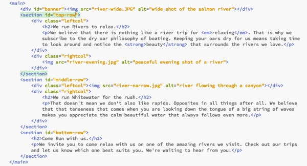
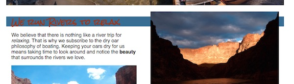

Layout the Home Page
Activity Instructions
Estimated Time: 45 minutes
We have made a lot of improvements to our page over the last few weeks. This week we finally take on the layout. After we finish the layout of our page it should look very similar to the wireframe, and will be close to complete.
Review again the wireframe for the Dry Oar site. We will start from the top and work down to position all of the elements that need it. The header (logo and navigation) will take a bit of extra work, and few concepts that we will not learn until next week...so we are going to skip it for now.
Step 01
First lets consider the banner. According to the wireframe it should extend all the way across the width of the page. Depending on which image you are using your's may or may not be doing that. Lets set a width of 100% on that image. Make a class for the image called fullwidth and apply the style with that.
Step 02
Now lets position the first section of headline, paragraph and image.
You should have grouped elements together in previous weeks...the code for this section should look something like this:
Notice how each section has a leftcol and rightcol div. Last week you should have set a width on them as well to about 48%. Now all we need to do is get them to line up horizontally.
Use float: left; and float: right; on the leftcol and rightcol to make the 2 columns form a row like in the wireframe.
Once you apply the floats to the left and right columns you may end up with something that looks like this:
What's going on here...it's all jumbled up! We need to remember that once we float an element, everything after that gets floated until we tell them to stop floating. In our case we want the leftcol to float left of the rightcol that is in the same section as it and nothing else!
We use clear: both; to stop things from floating. The question is where should we use it? All of the floating is confined to our sections...nothing outside of that containing box gets floated. If we put a clear in between each section it should clear up our jumble.
Step 03
Fix our floating by adding clear:both; to your rule that modifies your sections (In my case with code as above I would add it to my section rule).
Notice that because we are using the same classes for the next section which is styled similarly it has also moved into position. There is a problem however. The colored box that we put around those elements has collapsed!
This is a quirk of floats. When everything inside an element is floated the browser thinks the element is empty and so it collapses. Luckily there is an easy fix.
Step 04
Fix section 2 by adding overflow: auto; to a rule that modifies that section. (If your html is similar to mine you would add it to a CSS rule with a selector of section)
Step 05
Looking good! One thing is bugging me though. The headline and paragraph in the first section is aligned at the top of that space...it would look much better closer to the center. We learned how to do this last week. Move those elements down so they are closer to the center vertically. (Hint: think padding :) ) Then do the same for the paragraph in the second section.
Step 06
The bottom section should look pretty good by now. One thing though, it looks a bit squished. I think it would look better if it were closer in size to the other sections. Use margins, height, or padding to make it so.
Step 07
The last thing to do now is to finish the footer. According to the wireframe the copyright should be on the left, the social media icons on the right, the whole footer should be 55px high, and there should be space around the icons. This is similar to what we have done before. You should be able to figure it out. Review the tips on last weeks positioning activity if you get stuck. (Hint: you will probably need to use at least float, padding, width on the different elements in the footer. If you use float remember that the floated element must come before the other stuff in the html.)
Step 08
Enter the View URL to your site into a browser to make sure the webpage displays correctly. Once verified, Go to the next page to access "W09.02 Layout the Home Page" and click "Upload" to submit the URL for this assignment. Then remember to backup your Handcraft files (Projects->Gear icon->Export as .zip)
Grading
This activity will be graded using the following rubric:
- Positioning of elements (with the exception of the logo and navigation) looks like that in the wireframe (7 pts)
- The HTML is well formed and without errors and the page is visually appealing. (3 pts)